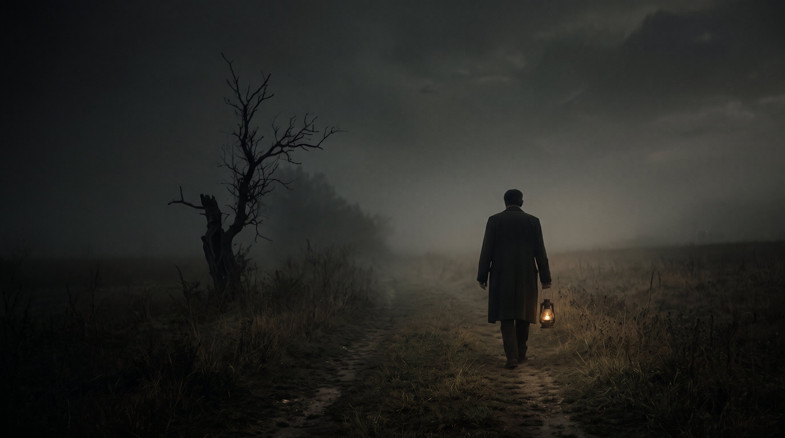

Relatos de umbral, desasosiego y crónicas al otro lado de la vigilia.

Hay historias que solo encuentran su cauce cuando la ciudad enmudece y la razón relaja su vigilancia. El Peregrino de la Medianoche es el gabinete sonoro de Círculo Kairós consagrado al misterio, lo insólito y los ángulos más oscuros de la experiencia humana.
I. La Ficción
Relato Dramatizado
Inmersión narrativa y atmósferas envolventes diseñadas para situarnos en la piel del desasosiego.
II. La Mirada
Análisis de Fondo
Reflexión crítica y desgranado del símbolo y sus raíces antropológicas.
III. La Crónica
El Caso Real
Archivos, testimonios y expedientes documentados donde lo inexplicable traspasa el papel.
Archivo de Emisiones
Capítulo 01 · Parte I: La Mirada
Topología de la Casa Moral, Cine de Sombras y Filosofía del Límite
Por Redacción de Kairós · Publicado el 2 de noviembre de 2026 · Duración: 32 min
Hoy nos adentramos en el territorio del umbral. Coincidiendo exactamente con la noche de los difuntos, con esa larga, fría y solemne vigilia de noviembre en la que convergen el viejo rito celta de Samhain, la melancolía sobria y pétrea de los cementerios católicos y la necesidad antropológica de recordar a los que ya no están.